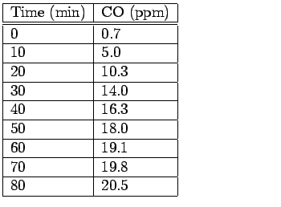

Next: About this document ...
Problem set #5
The following is a true story. My neighbor, Mrs. X [not her
real name, of course], approached me for some help in a lawsuit
which she had brought against her former employers. She had
suffered serious health problems and attributed them to a faulty
furnace at her former place of employment. The furnace had cracked and was
leaking carbon monoxide (CO) into the building. Continual exposure to
carbon monoxide can cause a wide variety of health problems. An
environmental consulting firm hired by the defendants measured the
extent of the leak in the following way. They turned off the furnace
and allowed the building to vent for many hours.
Table 1:
Tables of first
(left) and second (right) carbon monoxide measurements.

 |
Then, they turned on
the furnace and measured the carbon monoxide levels at a duct to a
common area at regular time intervals (see Table 1).
After this test, they turned off the furnace, waited a few hours, and
ran a second test (see Table 1 again).
- 1.
- Develop a mathematical model for the carbon monoxide level at the end
of the duct assuming that the faulty furnace was faulty and is
emitting carbon monoxide. What are the unknown parameters in your
model?
- 2.
- Fit your model to the measured data. Describe your procedure
explicitly. What is the difference
between your model predictions and the raw data? Extrapolate your
solution out to a time of 240 minutes.
- 3.
- If the measured data were subjected to small uniform
random fluctuations, how would it impact your model fit? Justify your
answer.
Next: About this document ...
Louis F Rossi
2001-12-04